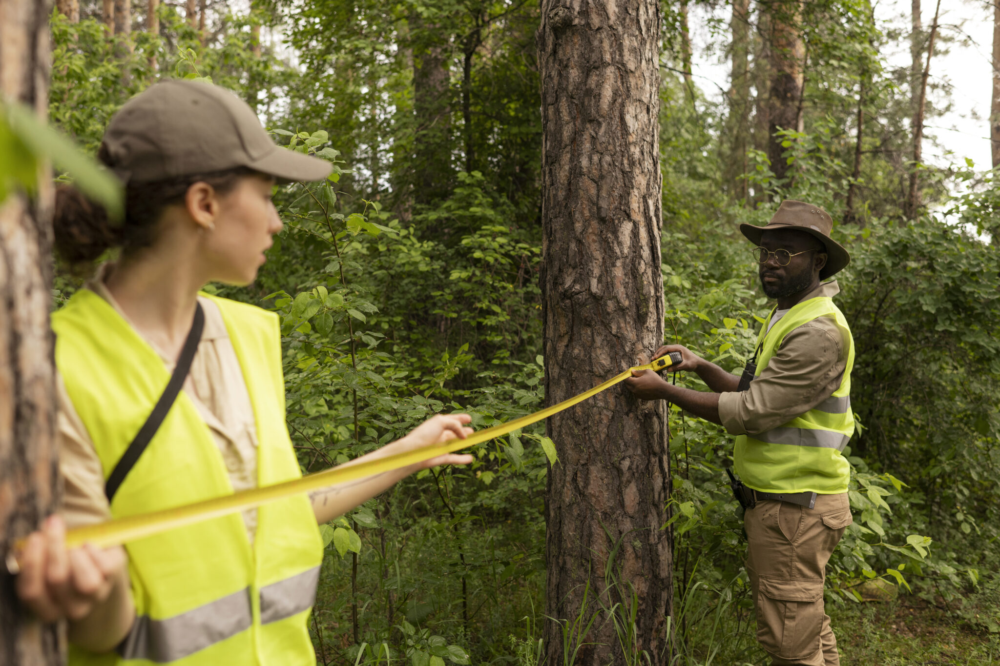

Seth Sternberg
CEO · The sensor guy
400M+ shipped products across AR, VR, IoT, and sensor fusion.
00 · Ground truth from the ground up
Bullfinch Earth measures, monitors, and maps every stem, passively, while foresters do their normal jobs.
Built by people who ship sensors, read Mars, and know the forest.
CEO · The sensor guy
400M+ shipped products across AR, VR, IoT, and sensor fusion.

CTO · The Mars guy
Built cameras now operating on Mars with NASA JPL.

CCO · The field guy
A decade of BC forestry, field operations, and customer depth.
01 · The old way
Inventory data drives forest operations, conservation, wildfire risk, and carbon MRV. It is still collected manually, through slow dedicated trips that usually measure less than one percent of what is actually there.
The problem, in one frame

02 · The Bullfinch way
One demonstration replaces several transitions: the wearable working in the field beside the map it creates.
Plan a Bullfinch walk
03 · Who it is for
Ground truth at operational scale for the people making decisions below the canopy.
Know what you are bringing to market.
Complete more billable projects each season.
Ground truth that registries can trust.
Below-canopy fuel data at scale.
Partners and recognition